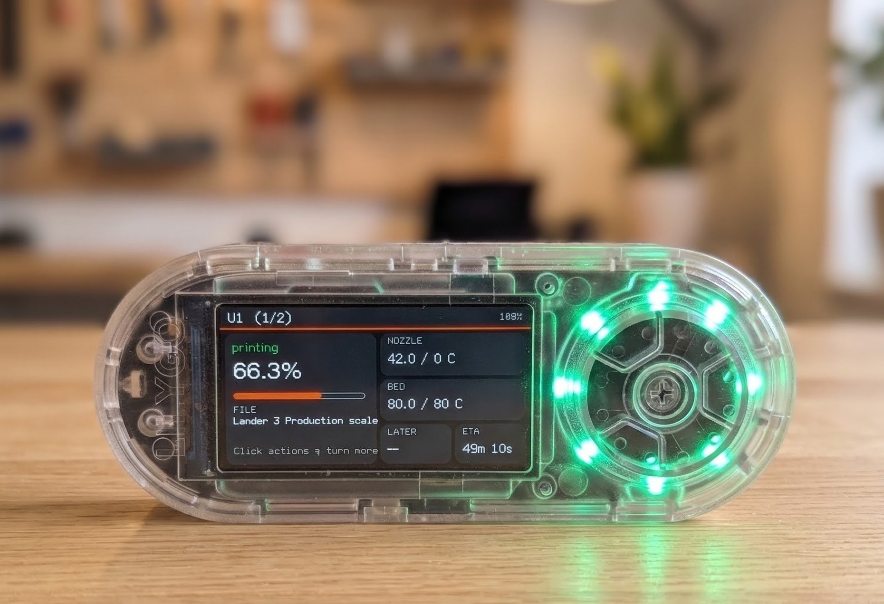
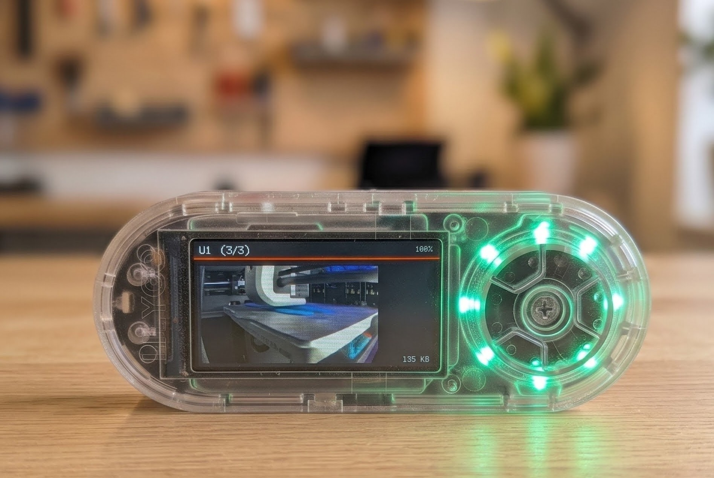

T-Print
Pocket remote for your 3D printers
Flash T‑Print onto a LilyGO T‑Embed, then monitor and control Klipper, Bambu, and Prusa from your pocket.


T-Print
Flash T‑Print onto a LilyGO T‑Embed, then monitor and control Klipper, Bambu, and Prusa from your pocket.
What it is
T‑Print is open firmware for the LilyGO T‑Embed. Encoder + screen for status, job details, and camera snapshots — pause, resume, cancel, or e‑stop without opening a laptop. Wi‑Fi setup stays on the device; nothing goes to a cloud account.
After you flash
On your phone, join the T-Print network the device creates.
Visit http://192.168.4.1, pick your home Wi‑Fi, and add printers.
Reopen the IP shown on the device screen (also via t-print.local).